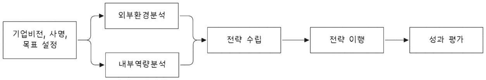

flowchart TB A[System Approach] --- B[System Philosophy] & C[System Analysis] & D[System Management]
경쟁우위 생산전략
기업전략
경영전략은 의사결정 수준, 즉 사업영역과 경쟁우위에 대한 고민에 따라 기업전략, 사업전략, 기능전략으로 구분된다. 일반적으로 장기적인 기본 방향인 기업전략을 수립하고 이를 구체화하는 사업전략, 기능전략으로 확정, 전개한다. 아래 도표와 같이 기업전략 - 사업전락 - 기능전략으로 계층 구조를 갖는다.

- 기업전략(Corporate Strategy)
-
기업이 참여할 시장과 산업 범위를 결정한다. 사업 다각화, 수직적 통합, 인수합병, 해외사업진출 등 사업 영역 전반적인 의사결정을 한다.
- 사업전략(Business Strategy)
-
시장 진출 사업 단위로 수립하며, 사업 영력을 설정하고 경쟁우위 확보를 위한 구체적이고 실질적인 전략이다. 원가가우위 전략, 차별화 전략, 집중화 전략 등 시장 경쟁위를 위한 의사결정을 한다. 기업이 단일 사업일 경우 기업전략과 사업전략은 동일하다.
- 기능전략(Functions Strategy)
-
연구개발, 구매, 생산, 물류, 영업 등 사업 경영 기능별 기본 전략이다. 사업전략 달성을 위해 각 사업 운영에 있어 세부적이고 효율적인 수행방법을 수립한다.
전략 수립 모델

경쟁우선순위
경쟁우선순위는 생산관리 목표로 볼 수 있다. 기업 생존 부등식에 따라 고객 만족과 효율적 생산을 목표로 전체 조직이 지향하는 방향을 나타낸다.
QCDFS는 Quality (품질), Cost (비용), Delivery (납기), Flexibility (유연성), Service (서비스)의 다섯 가지 요소를 말하는 것으로, 주로 제조업과 공급망 관리에서 사용되는 경쟁 우선순위를 나타내는 모델이다. 이 모델은 기업이나 공급자가 시장에서 경쟁 우위를 확보하기 위해 어떤 요소에 우선순위를 두어야 할지를 결정하는 데 도움을 준다.
- Quality (품질)
-
- 제품이나 서비스의 품질은 고객의 만족도를 결정짓는 핵심 요소다. 고품질의 제품을 제공하는 기업은 고객의 신뢰를 얻고 재구매를 유도할 수 있다. 품질을 우선시하는 기업은 결함이 적고 신뢰할 수 있는 제품을 생산하려는 노력을 기울인다.
- 고성능 품질, 균일품질
- Cost (비용)
-
- 경쟁력 있는 가격을 제시하는 것도 중요한 요소이다. 고객은 품질이 좋고 가격이 합리적인 제품을 선호하기 때문에, 비용 효율성을 고려한 생산과 관리가 필요다. 비용을 낮추는 전략은 생산 공정 개선, 재고 관리, 물류 최적화 등을 통해 이루어질 수 있다.
- 저비용, 낮은 가격
- Delivery (납기)
-
- 제품이나 서비스를 제때에 제공하는 능력은 고객 만족도에 큰 영향을 미친다. 납기 준수는 고객의 요구에 맞춰 정확한 시간에 제품을 전달하는 것을 의미한다. 효율적인 물류 시스템과 생산 계획을 통해 납기를 맞추는 것이 중요하다.
- 신속한 납기, 짧은 개발기간, 정시 납품
- Flexibility (유연성)
-
- 시장의 변화나 고객의 요구에 빠르게 적응할 수 있는 능력도 중요한 경쟁 요소입니다. 유연성은 주문 변경, 생산량 조정, 고객의 특수 요구사항을 처리하는 능력 등 다양한 상황에서 요구될 수 있다.
- 제품 유연성, 수량유연성
- Service (서비스)
-
- 제품의 품질만큼 중요한 요소는 고객 서비스이다. 제품 판매 후의 지원, 고객과의 소통, 문제 해결 능력 등은 고객의 충성도를 높이고, 장기적으로는 브랜드의 평판을 강화하는 데 중요한 역할을 한다.
이 다섯 가지 요소는 각 기업이 시장에서 경쟁할 때 어떤 요소를 우선시할지 결정하는 기준이 된다. 예를 들어, 고급 브랜드는 주로 품질과 서비스에 집중할 수 있고, 가격 경쟁력을 강조하는 기업은 비용과 납기를 중시할 수 있다.
본원적 경쟁전략

마이클 포터(Michael Porter)의 본원적 경쟁전략(Generic Competitive Strategy)은 기업이 경쟁에서 우위를 확보하기 위해 선택할 수 있는 세 가지 기본적인 전략을 제시한 이론이다. 포터는 경쟁 우위를 창출하는 방법으로 비용 우위(Cost Leadership), 차별화(Differentiation), 집중화(Focus) 전략을 제시했다.
다음은 요청하신 내용을 표로 정리한 것입니다:
| 전략 | 정의 | 목표 | 장점 | 예시 |
|---|---|---|---|---|
| 비용 우위 (Cost Leadership) | 기업이 동일한 산업 내에서 가장 낮은 비용으로 제품을 생산하고 제공함으로써 경쟁 우위를 확보하는 전략. | 생산 비용을 절감하고, 가격을 낮춰 시장에서 경쟁력을 확보. 대량 생산, 공정 최적화 등을 통해 비용을 최소화. | 가격 민감도가 높은 고객을 타겟으로 할 때 유리. 경쟁사들이 가격 경쟁에서 밀려 시장 점유율 확대 가능. | 월마트(Walmart), 맥도날드(McDonald’s) |
| 차별화 (Differentiation) | 제품이나 서비스가 다른 경쟁자들과 명확하게 차별화되어 고객들이 높은 가격을 지불하도록 유도하는 전략. | 제품의 품질, 디자인, 기술, 서비스 등에서 차별성을 강조하여 고객들에게 독특한 가치를 제공. | 브랜드 충성도가 높고, 가격 민감도가 낮은 고객을 타겟으로 할 수 있다. 경쟁에서 독특한 위치를 차지. | 애플(Apple), 테슬라(Tesla) |
| 집중화 (Focus) | 시장의 특정 세그먼트에 집중하여, 세그먼트 내에서 비용 우위 또는 차별화 전략으로 경쟁 우위를 확보하는 전략. | 전체 시장을 대상으로 하지 않고 특정 시장 세그먼트나 틈새 시장에 집중하여 경쟁 우위를 점함. | 특정 시장의 요구를 잘 이해하고 맞춤화된 제품이나 서비스를 제공. 경쟁이 치열하지 않은 틈새 시장에서 독점적 위치 확보. | 페라리(Ferrari), REI(아웃도어 용품 회사)1 |
이 표를 통해 각 전략의 정의, 목표, 장점 및 예시를 한눈에 비교할 수 있습니다.
전략 선택에 있어 포터는 각 기업이 이 세 가지 전략 중 하나를 선택해야 한다고 강조했다. 다양한 전략을 혼합하려는 시도가 종종 실패로 이어질 수 있다는 것이다. 이유는 각 전략이 요구하는 핵심 역량이 다르고, 각 전략을 혼합하면 자원의 집중이 부족해질 수 있기 때문이다. 결론적으로, 포터는 기업이 선택한 전략을 일관되게 유지하고 실행하는 것이 중요하다고 강조했다.
생산전략 수립
기업전략 및 사업전략이 수립되면 이에 부합한 생산전략을 수립한다. 생산전략 4가지 핵심 구성 요소는 다음과 같다.
- 생산 사명
-
생산기능 목적을 정의하고 생산 관리 4대 목표인 품질, 원가, 납기, 유연성 간 상대적 우선 순위를 명시한다. 사업전략이 저원가인 경우 원가를 강조, 차별화인 경우 납기와 유연성을 중요 시 한다.
- 차별적 능력
-
경쟁자 대비 특별한 능력 또는 우월한 능력으로 생산 사명과 부합해야 한다. 차별적 능력은 경쟁우위에 관한 것으로 생산전략의 핵심이다. 생산목표 상의 능력(품질, 원가, 납기, 유연성 등)이나 자원상의 능력(우수한 인재, 공급자/구매자 협상력, 기술 등)으로 나타난다.
- 생산목표
-
생산 사명을 계량적으로 측정가능한 용어로 나타낸다.
- 생산정책
-
생산목표를 달성하는 방법이다. 생산공정, 생산능력, 재고, 노동인력 및 품질, 5가지 생산의사결정 분야에 있어 각각 개발되어야 한다. 설정된 생산관리 목표는 경쟁우선위에 따라 생산 정책을 선택한다.
생산 전략은 집중화 전략과 글로벌 전략으로 구분할 수 있다.
| 전략 | 정의 | 주요 고려사항 | 예시 |
|---|---|---|---|
| 집중화 생산 전략 | 각 공장이나 설비에 단 하나의 사명만을 부여하고, 이에 초점을 맞춰 생산활동을 수행하여 시장 경쟁력을 높이는 전략. | - 제품 특성 및 요건 - 공정 유형 - 기술 유형 - 수요 크기 및 특성 - 주문 형태(재고 생산, 주문 생산 등) |
특정 제품 라인을 전문적으로 생산하는 공장(예: 자동차 공장에서 특정 모델만 생산) |
| 글로벌 생산 전략 | 통신기술, 운송수단 발달, 무역 장벽 철폐로 글로벌 시장이 가속화됨에 따라, 기업은 글로벌 시장에 맞춘 생산 전략을 수립하는 전략. | - 제품 설계 - 공정 설계 - 설비 입지 - 노동력 정책 등 모든 생산의사결정에 글로벌 생산 전략 반영 |
글로벌 기업(예: 애플, 삼성)이 여러 국가에 생산 시설을 두고 글로벌 시장을 타겟으로 한 생산 전략 |
생산방식
생산전략이 수립되면 제품에 고객요구나 제품 수명주기 등에 따른 생산방식을 결정한다.
제품 납기에 따른 생산방식

생산전략 일환으로 고객요구 납기에 따른 생산방식은 4가지 종류가 있다. 주문을 생산으로 변환하는 시점에 있는 재고를 분리지점 재고(Decoupling Point Inventory)고 한다. 생산방식은 분리시점 재고에 따라 다음과 같은 생산방식으로 구분할 수 있다.
| 생산 방식 | 정의 | 특징 | 장점 | 예시 |
|---|---|---|---|---|
| 재고생산방식 (MTS) | 완제품을 재고로 보관하고 고객 주문에 맞춰 공급하는 생산 방식. 대부분 공산품이 이 방식으로 생산. | 저가, 단일 품목 생산. 제품이 대량으로 생산되어 재고로 보관됨. | 저렴한 가격으로 빠른 서비스 제공. 대량 생산으로 비용 절감 가능. | 대형마트의 상품(예: 식료품, 가전제품) |
| 주문생산방식 (MTO) | 고객 주문이 들어오면 원자재 가공, 반제품 생산 및 완제품 조립이 이루어지는 생산 방식. 주로 공작기계 업체들. | 고객 맞춤형 생산. 제품이 고객의 주문에 따라 생산됨. | 다양한 고객 요구에 맞춘 맞춤형 제품 생산 가능. | 공작기계, 항공기 부품, 일부 산업 장비 |
| 주문조립방식 (ATO) | 반제품을 재고로 보관하고 고객 주문에 맞춰 조립 후 제품을 공급하는 방식. 자동차와 같은 옵션이 많은 제품에서 주로 사용. | 중간재를 재고로 보관하고, 고객 주문에 맞춰 다양한 옵션으로 조립하여 공급. | 중간 조립품 형태로 다양한 고객 요구를 충족시킬 수 있음. | 자동차(예: 옵션에 따라 다양한 모델 조합) |
| 주문설계방식 (ETO) | 고객 주문이 들어오면 설계부터 시작하여 자재 구입, 생산 및 조립이 이루어지는 생산 방식. 항공기, 선박 등에 사용. | 고객 주문에 맞춰 설계가 시작되며, 자재 구입부터 생산까지 모든 과정이 고객 맞춤형으로 이루어짐. | 고객의 다양한 요구를 유연하고 맞춤형으로 충족시킬 수 있음. | 항공기, 선박, 금형 설계 및 제작 |
제품 수명주기에 따른 생산방식

- 제품 수명주기
-
단계 정의 특징 생산부서의 역할 매출/이익 상황 계획기 신제품 혹은 서비스 아이디어가 창출되고 최종 설계가 이루어지는 단계. 아직 제품이 출시되지 않음. 수입은 없고 개발비용이 발생하며, 제품/서비스에 대한 이익은 음(-). 생산부서는 동시공학 방식으로 참여해야 함. 제품/서비스가 생산능력과 잘 부합되도록 하기 위해 생산부서도 참여. 동시공학 참고. 매출은 없으며, 개발 관련 비용 발생. 도입기 판매가 시작되고 이익이 발생하기 시작하는 단계. 생산 공정은 여전히 유동적이며 개선이 이루어짐. 매출은 아직 최고점에 도달하지 않지만 단위당 이익은 클 수 있음. 연간 이익은 작은 수준. 생산 공정 개선과 안정화를 위한 작업. 생산 공정은 유동적이고 지속적인 개선 필요. 매출이 발생하지만, 이익은 적음. 성장기 매출이 극적으로 증가하고 이익도 증가하는 단계. 생산능력을 확장해야 하는 상황. 제품 공급에 어려움이 있을 수 있어 하청이나 잔업을 통해 대응. 생산성 저하 우려가 있으며, 수요 충족을 위해 생산능력 확장. 생산능력 확장, 수요 충족을 위한 다양한 수단 강구. 효율성은 부수적 문제. 매출과 이익이 급증하지만, 생산성 저하 가능성 존재. 성숙기 매출이 안정되고 이익이 감소하기 시작하는 단계. 경쟁 심화로 원가 상승 및 이익률 둔화. 경쟁이 심화되어 원가 상승, 이익률 둔화. 마케팅 부서는 차별화 작업을 하고, 생산부서는 효율성 강조. 생산 효율성을 강조하고, 비용 절감 방안을 모색해야 함. 매출은 안정되지만 이익률이 감소. 쇠퇴기 시장에서 도태되는 단계. 기존 제품 수요가 소멸하거나 더 나은 제품으로 대체됨. 매출과 이익은 계속해서 감소하며, 기업이 제품을 포기할 때까지 이 추세는 계속됨. 생산을 점진적으로 축소하거나, 효율적인 비용 관리 방안을 모색해야 함. 매출과 이익이 지속적으로 감소.
대량맞춤생산
대량맞춤생산(Mass customization)은 개개 소비자가 다양하게 요구하는 대로 제품 서비스를 비교적 싼 가걱으로 제공하는 저가격, 고품질 고객화된 제품을 생산하는 것이다. 대량맞춤생산을 추구하는 전략 목표는 차별화된 제품을 싸게 공급하는 것으로 자동차 혼류생산이나 주문형 반도체, 주문배달파자등이 등이 있다. 최종 조립단계를 제외하 ㄴ나머지 생산과정은 모두 완료해 놓은 상태에서 고객 주문이 들어왔을 때 주문요구에 맞춰 최종 조립하여 완성된 제품을 제공하는 것을 연기(postpone)라 한다. Dell Computer는 부품업체 간 가상통합으로 다양한 고객 요구를 충족시켰다.
다품종 소량 생산
다품종 소량생산이란 같은 종류 제품이 드물고 수요량이 소량이며, 특히 주문에 의하여 제품을 생산하는 단속생산형태를 말한다. 이러한 생산형태는 생산계획과 통제가 제품별로 이루어지기 때문에 매우 복잡하며 일반적으로 중소기업에 유리하거나 익숙한 형태이다. 다품종 소량생산은 현재와 같이 시장이 세분화되고 시장규모 또한 갈수록 작아지는 경우에 매우 유리하다. 그러나 환경적인 요소 변화추세에 대응하기에 유리한 방법이지만 그 생산방식을 운영하는 데는 여러 가지 어려운 면들이 있기 때문에 생산방식을 도입할 때는 그 내용을 충분히 고려하여 적용하여야 한다.
- 특징
-
- 제품 수요에 대한 탄력성이 강하다.
- 여러 가지 주문에 응하여야 하기 때문에 범용설비가 유리하다.
- 생산에 대한 통제가 어렵다.
- 작업자는 제품 생산에 풍부한 경험과 지식을 갖추어야 한다.
- 단위당 생산원가가 높다.
- 관리상 문제점
-
- 수요 예측 어려움으로 인한 재고 관리 복잡성
- 제품별로 다른 부품과 자재 사용으로 인한 자재 관리 및 물류 비용 증가
- 작업자 숙련도 향상에 따른 교육 및 훈련 비용 증가
- 다품종 소량생산을 위한 설비 및 시스템 구축에 따른 초기 투자비용 및 유지보수 비용 증가
- 관리기법
-
- 유연생산시스템: 모듈화, 표준화로 다양한 제품을 효율적으로 생산
- 컴퓨터 기술 활용: CAM, MES 등으로 생산 과정 자동화 및 최적화
- 공급망 관리 강화: 전체 공급망을 효과적으로 관리하여 불필요한 재고 감소, 효율적인 물류와 유통 실현
택트타임 생산방식
- 택트타임(Takt Time) 생산방식
-
생산 과정에서 “생산속도”를 측정하고 이를 통해 생산 활동을 조정하는 방식이다. 택트타임은 주어진 시간 동안 생산해야 할 제품 양을 결정하는 지표로 고객 수요를 충족하기 위한 이상적인 생산 속도를 의미한다. “Takt”는 독일어로 리듬 또는 박자를 뜻하고, 이는 마치 오케스트라에서 각 악기가 일정한 리듬을 따라 연주하는 것처럼 생산 과정도 일정한 리듬에 맞춰 이루어져야 한다는 의미를 담고 있다.
택트타임은 다음 산식으로 계산한다.
\[\text{택트타임} = \frac{\text{가용 시간}}{\text{고객 요구수량}} \tag{1.1}\]
- 가용 시간: 생산라인에서 실제 가동되는 총 시간(하루 근무시간에서 휴식시간 및 식사시간 등을 제외한 시간)
- 고객 요구수량: 일정한 기간 동안 생산해야 할 제품 수(하루 고객이 요구하는 제품 개수)
택트타임은 아래와 같이 활용할 수 있다.
- 생산계획 조정
-
- 텍트 타임을 기준으로 생산 계획을 세우면 생산속도를 맞출 수 있고, 이를 통해 적절한 생산 인원 배치와 작업을 분배할 수 있다.
- 작업 균등화
-
- 생산 과정에서 각 작업 시간을 조정하여 균등하게 분배하고, 전체 시스템이 효율적으로 작동하도록 할 수 있다.
- 재고 관리
-
- 수요에 맞춰 생산량을 조절함으로써 불필요한 재고를 줄이고 효율적인 재고 관리가 가능하다.
- 납기 준수
-
- 택트타임에 맞추면 고객 요구 사항에 맞춰 제품을 적시에 납품할 수 있다.
택트타임 생산 방식은 주로 린 생산(Lean Production)이나 JIT 생산(Just-in-time) 시스템에서 사용하며 생산성을 극대화하고 낭비를 최소화하는데 중요한 역할을 한다.
- 택트타임 생산방식 장단점
-
장점 단점 불필요한 작업 대기시간 감소 반복 생산, 흐름 생산이 아니면 적용이 곤란 공정 간 균형 개선으로 효율 향상 공정 트러블 발생 시 생산 계획 차질 설비와 공정 간 작업자 낭비 최소화 인원 변동 시효율 저하로 손실 초래 가능 평균(균등)화, 동기화 생산 가능 작업자 간 실력 편차가 심하여 택트타임 설정 어려움 작업 이상 발생 시 후 공정 진행 불가로 문제점 즉시 파악 정해진 시간 내 작업으로 심리적 부담 증가
택트타임 생산방식과 같은 흐름생산에서 피치타임(Pitch Time)과 균형손실률은 생산 공정의 효율성을 평가하고 개선하기 위한 중요한 지표가 된다
생산시스템
생산시스템이란 원자재나 부품을 이용해 제품을 생산하는 과정에서 필요한 모든 자원과 활동이 조직적으로 연계된 시스템을 의미한다. 생산시스템은 생산 과정에 있어 효율성, 품질, 비용 등을 관리하고 최적화 하는데 중요한 역할을 한다.
생산
생산은 원자재나 자원을 사용해 제품을 만드거나 서비스를 제공하는 모든 과정과 활동을 의미한다. 이유 유사한 의미로 제조가 있으며 이는 물리적인 제품을 만드는 과정으로 볼 수 있다.
생산은 더 넓은 개념으로, 제품 생산뿐만 아니라 서비스 제공까지 포함하는 반면, 제조는 물리적인 제품을 만들기 위한 구체적인 생산 활동에 집중한다. 즉, 제조는 생산의 한 부분이며, 모든 제조 활동은 생산 과정의 일부지만, 생산 활동은 제조 이외의 다른 많은 활동도 포함하는 더 넓은 범위의 개념이다.
시스템
시스템
시스템(system)은 각 구성요소들이 상호작용하거나 상호 의존하여 복잡하게 얽힌 통일된 하나의 집합체(unified whole)이다. 또는 이 용어는 복잡한 사회적 체계의 맥락에서 구조와 행동을 통제하는 규칙드의 집합체를 일컫기도 한다. 2
어떤 환경에서 주어진 목적을 달성하려는 서로 관련성을 가진 식별 가능한 여러 요소 집합으로 다음과 같은 특성을가진다.
- 집합성
-
두 개 이상의 식별 가능한 단위체로 구성된다.
- 상호관련성
-
단위체 간 서로 연관성이 있거나 상호관계, 상호작용을 한다.
- 목적추구성
-
목적을 추고하고 그것을 달성하기 위해 동작한다.
- 환경적응성
-
실시간으로 변화하는 환경에 적응해야 한다.
시스템 유형은 다음 같다.
| 개방형 시스템(Open Loop System) | 폐쇄형 시스템(Closed Loop System) |
|---|---|
|
|
시스템 사고
시스템 사고(systems thinking)는 세상을 여러 부분으로 나누는 것이 아니라 전체 관계의 관점에서 바라봄으로써 세상의 복잡성을 이해하는 방법이다. 시스템 이론과 시스템 과학 등을 이론적인 기반으로 한다. 기존의 분석적 사고가 환원주의에 기반하여 대상을 쪼개어 나가는데 반해 시스템적 사고는 전일주일(holism)에 기반하여 대상을 살아있는 유기체로 보며 부분을 넘어선 젠체를 파악하려 한다. 시스템 사고는 1950년대 말 MIT 포리스터 교수가 개발한 시스템 다이나믹스(System Dynamics)라는 학문을 뿌리에 두고, 해당 학자들이 어려운 컴퓨터 모델링 부분을 떼어 내어 시스템 사고라는 영역을 만드어 널리 알려졌다. 3
시스템적 접근
시스템적 접근(System approach)는 전체 입장에서 부분을 이해하고 상호 관련성을 추구하여 문제 본질을 파악하고 해결하는 방식이다.
- System Philosophy - 철학적, 관념적, 이론적
-
어떤 현상/사물을 하나의 단일체로 인식하고 전반적 사항을 파악
- System Analysis - 문제 해결 능력
-
체계적, 과학적인 문제해결 기법으로 목표달성과 자원의 효율적 활용을 추구
- System Management - 실용적
-
능률적, 효율적인 시스템 설계와 운영(구성요소 기능의 유기적 조정과 통합)
시스템적 접근 효과는 다음과 같다.
- 주어진 문제를 전체적인 입장에서 명확히 밝힐 수 있다.
- 구성요소 간 상호관련성 내지 상호작용을 이해할 수 있다.
- 관련되는 요인의 원인과 결과를 밝힐 수 있다.
- 문제가 되는 변수와 제약요소와의 상호관계를 밝힐 수 있다.
생산시스템
생산 시스템은 생산 목표를 달성하기 위하여 여러 가지 자원을 투입하여 제품이나 서비스로 변환시키는 유기체이다. 생산 시스템은 입력(Input)을 변환(Process)하여 산출(Output)하는 과정으로 I/O 시스템이라고도 한다. 일반적인 구조는 다음과 같다.

- 투입 (Input)
-
- 생산 과정에서 사용되는 자원들을 말한다. 여기에는 원자재, 노동력, 자본, 에너지, 정보 등 모든 물리적, 인적 자원이 포함된다. 투입은 생산 과정의 시작을 의미하며, 이 자원들이 변환 과정을 거쳐 최종 제품이나 서비스로 바뀐다.
- 변환 (Process)
-
- 투입된 자원을 실제로 제품이나 서비스로 변환하는 과정이다. 이 과정은 물리적, 화학적, 기계적, 기술적 방법 등을 사용하여 원자재를 최종 제품으로 바꾸는 작업을 포함한다. 변환 과정은 품질 관리, 생산 계획, 작업 절차 등을 포함하며, 시스템의 효율성과 직결된다.
- 산출 (Output)
-
- 변환 과정을 거쳐 생산된 최종 결과물이다. 이 결과물은 고객의 요구를 만족시키는 제품이나 서비스가 되어야 한다. 산출은 품질, 양, 시기 등을 고려하여 생산되어야 하며, 이는 결국 시장에 공급되는 형태로 나타난다.
- 피드백 (Feedback)
-
- 생산시스템에서 발생한 결과를 바탕으로 향후 생산 활동을 개선하는 데 필요한 정보를 제공한다. 피드백은 시스템의 성과를 평가하고, 문제를 식별하며, 개선점을 찾아내는 중요한 역할을 한다. 예를 들어, 제품의 품질 문제가 발생했을 때, 이를 해결하기 위한 조치나 프로세스 개선이 필요할 수 있다.
- 환경 (Environment)
-
- 시스템이 작동하는 외부 및 내부 환경을 의미한다. 환경은 시장 상황, 경쟁, 경제적 조건, 규제 및 법률, 기술 변화 등 외부 요인과, 조직의 문화, 기술 수준, 내부 자원의 상태 등 내부 요인까지 포함한다. 환경은 시스템의 운영과 결과에 영향을 미치며, 이를 적절히 반영해야 시스템이 지속 가능하고 경쟁력을 유지할 수 있다.
의사결정 사항
생산시스템의 구조와 운영에서 장기적 관점과 단기적 관점의 의사결정 사항은 각각 다른 목표와 전략을 반영한다. 이를 각각 설명하면 다음과 같다.
장기적 관점은 생산시스템의 구조적 변화와 전략적 방향을 설정하는 것에 초점을 맞춘다. 이는 기업의 지속적인 성장과 경쟁력을 확보하기 위해 중요한 의사결정 사항이다.
- 장기적 관점의 의사결정 사항
-
- 설비 투자: 생산 시설의 구축, 현대화 또는 확장에 대한 의사결정. 새로운 기술을 도입하거나 기존 설비를 대체하는 것과 같은 장기적인 투자가 포함된다.
- 제품 라인 결정: 향후 생산할 제품의 종류와 특성, 제품 믹스를 결정하는 것. 제품의 다양화나 시장 변화에 대응하는 생산능력 확장 등이 해당된다.
- 생산공정 설계: 효율적인 생산공정을 구축하고, 향후 생산성과 품질을 향상시킬 수 있도록 공정 개선과 시스템 재설계를 결정한다.
- 경쟁력 확보를 위한 전략적 공급망 구축: 장기적으로 안정적인 원자재 공급, 물류 효율화 등을 통해 경쟁력을 확보하는 전략적 의사결정이 필요하다.
단기적 관점은 현재의 생산운영에서 발생하는 문제를 해결하고, 효율성을 높이는 데 초점을 맞춘다. 일상적인 운영을 원활히 하기 위한 의사결정이다.
- 단기적 관점의 의사결정 사항
-
- 생산 계획 수립: 일정 기간 동안의 생산량을 계획하고 자원을 효율적으로 배분하는 의사결정. 예를 들어, 생산량을 최적화하기 위해 주간 생산 계획을 수립한다.
- 재고 관리: 원자재 및 완제품의 재고 수준을 관리하고, 수요 변동에 대응하기 위해 재고를 최적화하는 의사결정이 포함된다.
- 작업 일정 관리: 작업자 및 기계 자원의 할당과 일정 조정, 생산 라인의 효율적인 운영을 위한 의사결정이다.
- 품질 관리: 제품 품질을 유지하고 불량률을 최소화하기 위한 단기적인 품질 관리와 개선 활동을 결정한다.
- 비교
-
구분 장기적 관점 단기적 관점 의사결정 대상 생산시설 설계, 제품 라인업, 공급망 구축 생산 계획, 재고 관리, 품질 관리 목표 기업의 지속 가능성 및 경쟁력 확보 효율적인 운영과 현재 문제 해결 시간적 범위 수년 혹은 수십 년 월간, 주간, 일일 중점 사항 기술 혁신, 설비 투자, 제품 개발 작업 스케줄 관리, 원자재 재고 관리
장기적 관점의 의사결정은 전략적 목표를 달성하기 위한 기반을 마련하는 반면, 단기적 관점은 생산 활동을 효율적으로 수행하고 현재 상황에 맞는 문제를 해결하는 데 중점을 둔다.
생산시스템 종류
flowchart TB 생산시스템 --- 단속생산 & 연속생산 단속생산 --- 프로젝트생산 & 잡샵생산 & 배치생산 연속생산 --- 대량생산 & 흐름름생산
- 단속생산
-
- 생산 흐름이 불규칙한 형태로 주로 주문 생산에서 이루어진다.
- 연속생산
-
- 정유나 화학제품과 같이 정해진 품목을 고정된 플랜트 시설을 통해 연속적으로 대량 생산하는 방식이다.
- 프로젝트(Project) 생산
- 잡샵(Job Shop) 생산
-
- 가구나 기계 장비 등 주문자 요구에 따라 생산하는 방식으로 소량생산하는 방식이다. 여러 종류 부품 가공이 이루어지므로 범용성이 있는 장비가 사용된다. 일정 관리를 위해 MRP(자재소요계획) / CRP 등이 사용된다.
- 배치(Batch) 생산
-
- 다품종 소량생산인 잡샵 생산과 소품종 대량생산인 연속공정 중간 형태로 몇몇 표준화된 품목을 묶어 로트 단위로 단속적으로 생산하는 방식이다. 제빵, 제화, 도자기 등의 제품 생산에 적합하다.
- 대량(Mass) 생산
-
- 라인생산이라고도 하며 소품종 대량생산을 위한 형태이다. 표준화된 자재와 부품이 고정된 작업순서에 따라 하나의 생산라인을 따라 이동하며 공정 처음부터 끝까지 중단없이 대량으로 제품을 효율적으로 생산한다. 전자제품, 자동차 등이 해당한다.
- 흐름(Process) 생산
-
- 표준화된 제품이 대량으로 고도로 자동화된 시설에서 연속적으로 제품을 생상하는 형태이다. 자본집약적 공정으로 가동률을 최대로, 재고수준을 최소로 유지하여 생산효율성 극대화를 목표로 한다. 정류, 화학제품, 주료, 제철 등이 해당한다.
생산시스템은 경쟁우위 요소와 생산목표에 따라 변천해 왔다.
대표적 생산시스템
대표적 생산시스템은 다음과 같다.
- 대량 생산: 테일러 시스템
- 연속 흐름 생산: 포드 시스템
- 린 생산: 도요타 시스템
- 다품종 유연 생산: FMS
테일러 시스템
테일러 시스템은 F.W. Taylor가 창안한 생산관리와 경영 전반에 걸친 시스템이다. 테일러 시스템의 핵심은 다음과 같다.
19세기 말, 기업 규모 확대 및 노사 분규 중대에 따른 노동생상성 향상 문제가 나타났다. 노동 관리에 과학적 분석을 가하고 제도를 개선하여 대응하려 만든 관리법으로 작업 동작을 과학적으로 분석한 뒤 불필요한 동작을 최소화하고 표준 동작을 책정하고 조합하여 평균 작업시간을 산출했다. 그에 따른 목표를 세우고 과업 달성 여부에 따라 성과급 제도 등을 고안했다.
테일러 시스템의 4가지 원리는 다음과 같다.
flowchart LR 시간연구 & 동작연구 --> 0 --> 1[작업관리] subgraph 0[표준작업량 설정] 00[일류 노동자 선택<br>작업을 부분 동작으로 구분<br>동작별 소요 측정<br>여유시간 더하여 설정] end subgraph 작업관리[과학적 관리 운영 제도] direction LR 11[기획부제] 12[직능별 직장제] 13[지도표제] 14[차별적 성과급제] end subgraph 4대원칙 direction LR 21[공정한 1일 과업량] 22[작업조건 표준화] 23[과업 성공 시 성과급제] 24[과업 실패 시 손실] end 1 ---> 4대원칙 1 ----> 작업관리 classDef transclass fill:#fcfcfc, stroke:#fcfcfc
- 기획부 제도
-
각 기획부를 두어 작업자를 관리하여 작업자는 생산작업에 집중하도록 함
- 기능적 직장 제도
-
기능적 책임자가 작업자에게 분업적으로 지도하도록 함
- 작업지도표(카드) 제도
-
작업지시 시 주요 사항을 작업지도표(카드)에 기록하도록 함
- 차별적 성과급 제도
-
과업 성공 시 작업자에 대한 성과급 지급
과학적 관리법
프레더릭 윈슬로 테일러(Frederick Winslow Taylor)가 개발한 과학적 관리법(Scientific Management)은 산업 현장의 생산성과 효율성을 극대화하기 위한 관리 기법이다. 테일러는 작업 방식의 표준화와 작업자의 능률 향상을 통해 생산성 향상을 목표로 했다.
핵심 개념은 다음과 같다.
- 작업 분석 및 표준화 - 작업을 세분화하고 시간 및 동작 연구(Time and Motion Study)를 통해 최적의 작업 방법을 찾는다.
- 표준화된 절차를 통해 비효율적인 동작 제거 및 생산성 향상을 도모한다.
- 과학적 방법에 의한 인력 선발 및 훈련 - 직무에 적합한 인력을 선발하고 체계적인 훈련을 통해 작업 기술을 향상시킨다.
- 과학적 방법으로 개인의 능력에 맞는 역할을 부여한다.
- 성과 기반 임금 제도(차별적 성과급 제도) - 성과에 따른 차별적 임금을 도입해 작업자의 동기 부여를 강화한다.
- 높은 생산성을 기록한 작업자에게 추가 인센티브를 제공한다.
- 관리자와 작업자의 책임 분리 - 관리자는 계획 및 작업 방법을 설계하고, 작업자는 이를 수행한다.
- 이를 통해 업무의 전문화를 달성하고 효율성을 높인다.
- 협력 및 조정 강화 - 작업자와 관리자가 협력하여 목표 달성을 위해 노력하며, 상호 이익을 추구한다.
- 테일러 관리법 4가지 원칙
-
- 과학적으로 작업 방식을 개발하고 기존의 비효율적 방식을 제거한다.
- 작업자 선발 및 교육을 체계화해 적합한 인재를 적재적소에 배치한다.
- 관리자와 작업자 간의 협력을 유도하여 상호 신뢰를 구축한다.
- 업무 및 책임을 분담하여 관리자는 계획하고, 작업자는 실행에 집중한다.
- 과학적으로 작업 방식을 개발하고 기존의 비효율적 방식을 제거한다.
- 과학적 관리법의 영향
-
- 산업 혁신 및 대량 생산 체계 발전에 기여했다.
- 작업자의 생산성을 높이고 비용 절감 및 수익성 향상을 유도했다.
- 포드의 컨베이어 시스템(assembly line)과 같은 대량 생산 체제에 큰 영향을 주었다.
- 산업 혁신 및 대량 생산 체계 발전에 기여했다.
- 비판 및 한계
-
- 인간 소외: 작업자를 기계의 일부로 간주해 인간의 창의성을 무시하는 경향이 있다.
- 동기 부여 부족: 금전적 보상 외의 심리적, 사회적 동기 부여 요인을 간과했다.
- 획일성 문제: 작업 표준화가 유연성과 다양성을 저해할 수 있다.
- 인간 소외: 작업자를 기계의 일부로 간주해 인간의 창의성을 무시하는 경향이 있다.
테일러 과학적 관리법은 현대 관리학의 기초를 마련했으며, 효율성, 표준화, 생산성 향상의 중요성을 부각시켰다. 하지만 인간 중심의 관리 방식과의 조화를 통해 보다 발전된 관리 기법으로 진화해 나가고 있다.
포드 시스템
포드(Ford) 시스템은 H.Ford가 포드 자동차 회사에서 대량생산방식으로 확립한 자동차 이동 조립법으로 컨베이어 시스템이라 한다. 생산산을 표준화하고 컨베이어와 작업자를 동시 관리 했다. 고임금과 저가격으로 사회에 봉사한다는 것을 목표로 했다.
디트로이트 공장에서 완성하였다고 하여 디트로이트 오토메이션(Detroit automation)이라 하며, 대량생산의 획기적인 계기가 되었다고 하여 대량생산 시스템이라고 한다.
포드 시스템의 전제조건은 다음과 같다.
- 생산 표준화
- 컨베이어 시스템
- 동시관리
- 대량소비 시장
포드 시스템 성과는 다음과 같다.
- 생산 표준화로 대량 생산 가능
- 컨베이어 시스템으로 생산 규칙성 실현
- 종합적인 생산관리 가능
포드 시스템의 장점과 단점은 다음과 같다.
| 장점 | 단점 |
|---|---|
|
|
테일러와 포드 대량생산 방식
| 구분 | 테일러 시스템 | 포드 시스템 |
|---|---|---|
| 제창자 | F. W. Taylor | H. Ford |
| 일반 통칭 | 과업관리 (Task Management) | 동시관리 (Management by Synchronization) |
| 적용 목적 | 주로 개별생산의 공장, 특히 기계제작공장에서의 관리기술의 합리화가 목적 | 연속생산의 능률 향상 및 관리의 합리화가 목적 (테일러 시스템의 결점 보완) |
| 일관된 근본정신 | 고임금·저노무비의 원칙 (High Wage Labour Cost Principle) | 저가격·고임금의 원칙 (Low Price, High Wage Principle) |
| 원리 (기본 이념) | ① 최적 과업 결정 ② 제 조건의 표준화 ③ 성공에 대한 우대 ④ 실패 시 노동자 손실 |
최저 생산비로 사회에 봉사한다는 이념 |
| 수단·방법 (구체적 전제) | [과업관리 합리화를 위한 수단] ① 기초적 시간연구 ② 직능적 조직 ③ 차별적 성과급제 ④ 작업지도표 제도의 도입 |
[동시관리 합리화를 위한 전제] ① 생산의 표준화(제품의 단순화, 부분품의 규격화, 기계공구의 전문화, 작업의 단순화) ② 이동조립법 ③ 일급제 급여 ④ 대량 소비시장의 존재 |
| 장점 | ① 생산관리의 시발점 ② 공평한 보상체계 ③ 간접조직 이용 |
① 대량생산체계 ② 생산의 합리화 추구 ③ 낮은 원가로 저렴하게 판매 ④ 생활의 질 개선 |
| 단점 | ① 성과 중심의 관리 ② 기준 설정의 한계 |
① 인간을 기계에 예속 ② 과잉생산의 한계 |
도요타 시스템

포드의 대량생산방식은 일본에서 적용할 수 없다는 도요타 자동차의 도요타 에이지, 오노 다이이치 판단에 따라 도요타만의 생산방식을 정립하였다. 도요타 생산 방식은 소로토 생산으로 생산현장 낭비를 제고하고 다품종 소량 생산체제를 지향한다. 이를 위해서 JIT 생산과 인변 자동화(Jidoka)라는 개념을 도출하여 생산기술 및 운영체제, 조직을 정비하였다. 1949년 도요타는 자동차 생산경쟁력이 없다고 판단하고 자동차 사업 매각까지 검토하였으나 기계공업의 근간인 자동차 사업 매각은 일본 내 경제에도 큰 부담이 될 것으로 판단한 정부의 구제지원을 받고 치열한 생존경쟁을 벌여야 하는 위기의식도 TPS 탄생 배경이라 할 수 있다.
하지만 판매력, 하청 관리력, 기술력, 생산 평준화가 가능한 체제, 생산관리 체제의 정비 등 여러 조건이 갖춰져야 원활한 TPS 운영이 가능하다. 간판방식이 하청업체에게 큰 부담으로 작용하여 재고를 떠 안기도 하며 도요타 생산은 전후 공정 생산평준화 등으로 작업자에게 과도한 노동강도, 압박을 주는 비인간적 공장으로 묘사되기도 했다.
7대 낭비
도요타 생산 시스템(TPS)에서 강조하는 7대 낭비(7 Wastes)는 효율성을 높이고 불필요한 자원을 낭비하지 않도록 하기 위한 개념이다. 이 낭비들은 모두 Muda(무다)로 불리며, 조직의 생산성과 가치를 저하시킬 수 있다. 다음은 도요타에서 정의한 7대 낭비이다.
이 7대 낭비를 줄이기 위해 도요타는 지속적인 개선(Kaizen)과 효율적인 프로세스를 도입하여 생산성을 극대화하고, 자원의 낭비를 최소화하려고 노력한다.
이런 낭비 제거 및 근본 예방을 위해 다음과 같은 하위 시스템을 구축하였다.
flowchart TB 00[낭비제거] 10[JIT 생산] 20[소로트 생산] 30[자동화] 40[TQC 및 현장개선] 1[과잉생산] 2[재고] 3[운반] 4[대기] 5[가공] 6[동작] 7[불량] 00 --- 10 & 20 & 30 & 40 10 --- 1 & 2 & 4 20 --- 5 & 6 & 7 30 --- 2 40 --- 3 & 5 & 6 & 7 classDef transclass fill:#fcfcfc, stroke:#fcfcfc
JIT 생산
flowchart TB 0[JIT 생산] --- 1[간판방식] & 2[생산 평준화] & 3[소로트 생산] & 4[설비배치와 다기능공] classDef transclass fill:#fcfcfc, stroke:#fcfcfc
- 간판방식
-
- 어떤 제품(부품)이 얼마나 필요한가를 알려 주는 역할
- 발주점 방식을 응용한 것으로 최소 재고를 위한 간판이라는 눈으로 보는 관리 방식을 채택
- 간판은 엽서 크기 카드나 전표 형태로 작업지시표 내지 이동표 역할을 하여 작업이나 운반에 관한 정보를 제공하거나 물품 관리 기능을 수행
- 뒷공정이 앞공정으로부터 물품을 인수할 때 사용하는 인수간판과 생산부문에 대한 생산지시용 생산간판 사용
- 생산 평준화
-
- 간판 시스템은 생산공정 간 동기화 개념으로 운영되기 때문에 특정 공정 생산변동이 발생할 경우 전/후 공정으로 연쇄반응을 일으키는 악순환 발생
- 문제가 발생되지 않기 위해서는 각 공정 생산성(특히 생산속도)은 균일화가 필요요
- 소로트생산
-
- 생산 평준화를 달성하기 위해서 가능한 로토를 작게 운영
- JIT 생산을 위해 유연하고 신속한 생산을 하려면 리드 타임을 단축 필요
- 리드타임(lead time)은 “가공시간 + 정체시간”으로 표현되며 리드타임을 짧게 할 경우 가공, 정체 시간 단축 외에도 재고가 줄고 재고가 줄어 재고 수면에 잠긴 문제점이 나타남
- 설비배치와 다기능공
-
- 수요변화, 생산량 변동에 따라 탄력적인 인원조절을 가능하도록 하기 위해서 설배배치를 최적화하고 다기능작업자를 양성(소수인화)
- JIT 생산의 통상적인 기계배치는 U자형 배치 사용
- U자형 배치는 작업자의 작업범위를 늘이거나 줄이는 것이 용이하나 배치가 충분히 기능을 발휘하기 위해서는 여러 기계를 능숙하가 다룰 수 있는 다기능 작업자가 필요
인변 자동화

TPS에서 자동화(Autonomation, automation + autonomy)는 성력화에 그치는 것이 아니라, 간단한 감지장치를 붙여 공정 이상을 자동으로감지하여 생산을 정지하는 것을 말한다. 일반 자동화와 차이는 다음과 같다.
| 항목 | 자동화 (Automation) | 자율화 (Autonomation) |
|---|---|---|
| 정의 | 사람 작업을 대신하여 스스로 움직이는 시스템 | 이상이나 불합리한 점을 감지하여 스스로 정지하는 시스템 (Auto stop 기능) |
| 작동 방식 | 불합리한 점이 있어도 계속 스스로 움직임 (사람이 정지시킴) | 이상 상태에서 자동으로 정지하며, 불합리한 원인을 쉽게 찾을 수 있음 |
| 불량 처리 | 불량이 발생하고 재발 방지 대책이 어려움 | 불량을 만들지 않고 발생하지 않도록 처리함 |
| 사람과 기계의 관계 | 사람과 기계가 계속해서 밀접하게 작업 | 사람과 기계가 분리되어 다대 담당, 다공정 담당이 가능 |
| 문제 해결 | 사람이 개입하여 문제를 해결해야 함 | 시스템이 스스로 문제를 감지하고 정지하여 문제를 해결할 수 있음 |
TPS 자동화는 도요타 사조인 도요다 사키치가 발명한 자동직기에서 비롯했다. 자동직기는 날실이 끊어지거나 씨실이 빠지면 즉시 기계가 멈춰서 불량을 내지 않았다.
가동률
도요타 생산방식에서 가동률(稼動率)과 가동률(可動率)은 서로 다른 개념을 의미한다.
- 稼動率(かどうりつ,稼動率)
-
- 설비나 라인의 실제 가동 시간이 전체 계획된 시간에 대해 차지하는 비율을 의미한다.
- 쉽게 말해, 설비가 얼마나 실제로 움직이고 있었는지를 측정한다.
- 계산식:
\[稼動率 = \frac{実稼動時間}{計画稼動時間} \times 100\] - 예시: 하루에 8시간 가동이 계획되었지만, 실제로는 6시간만 가동되었다면稼動率은 75%가 된다.
- 설비나 라인의 실제 가동 시간이 전체 계획된 시간에 대해 차지하는 비율을 의미한다.
- 可動率(かどうりつ,可動率)\
-
- 설비가 가동할 수 있는 상태에 있었던 비율을 의미한다.
- 설비가 정상적으로 작동 가능한 상태였는지를 측정하며, 설비 고장이나 정비로 인해 사용할 수 없는 시간을 제외한다.
- 계산식:
\[可動率 = \frac{可動時間}{実稼動時間 + 故障時間} \times 100\] - 예시: 설비가 6시간 가동했고, 1시간은 고장으로 멈췄다면,可動率은 85.7%가 된다.
- 설비가 가동할 수 있는 상태에 있었던 비율을 의미한다.
- 차이점
-
- 稼動率: 설비가 실제로 얼마나 사용되었는가
- 可動率: 설비가 얼마나 사용할 수 있는 상태였는가
- 稼動率: 설비가 실제로 얼마나 사용되었는가
두 지표는 도요타 생산방식에서 설비의 효율성과 안정성을 높이기 위해 함께 관리한다.
공장입지
입지 조건
공장 입지란 생산을 위한 건물과 설비를 위치시킬 지역을 결정하는 것으로 예상투자수익률을 최대화할 수 있는 지역을 결정하게 된다. 일반적인 공장입지 선정 요인은 다음과 같다.
- 공장입지 선정 요인
-
- 노동력과 노동환경(노동력 질, 임금 수준 등)
- 고객(시장)과의 접근성
- 원자재 접근성
- 수송 효율성 및 비용
- 공업용수의 양과 질
- 제품에 적합한 기후조건
- 토지가격
- 정부 규제(세금, 지원금 등)
- 노동력과 노동환경(노동력 질, 임금 수준 등)
-
- 노무비가 차지하는 비율이 높은 노동집약적 산업에서는 노동력이 입지결정에 있어 중요한 요인, 많은 노동력을 필요로 하는 공장을 세울 때는 그 지역의 잠재노동력을 우선 고려해야 한다. 필요노동력의 3~4배의 구직자가 존재하는 지역에 입지하는 것이 이상적이며 근대 산업사회의 수준이 높아짐에 따라 조직구성원의 가치관 및 생활환경과 갖은 삶의 질 문제가 중요한 입지요인으로 대두되고 있다.
- 고객(시장)과의 접근성
-
- 서비스 시설이나 공장을 시장이나 고객과 근접한 장소에 세우면 고객과의 접촉이 용이하며 수요변화에 적응하기 쉽고 운송비가 적게 소요되는 이점이 있다. 시장에 가까이 입지하면 유리한 제품 변질되기 쉬운 제품으로는 파손되기 쉬운 제품, 모양이나 유형이 자주 바꾸는 제품 등이 있다.
- 원자재 접근성
-
- 원자재의 비중이 높은 공장에서 주요 입지요인이 된다. 광업, 수산업, 채취산업 과 농업, 임업 등은 천연자원이 존재하는 장소에서만 생산행위가 가능하므로, 농산물 가공업은 자원이 변질되기 쉬우므로 원산지 근처에, 시멘트, 제련소, 펄프 공장은 사용원자재의 용적이 크거 나 중량물질이므로 원산지 가까이 입지하는 것이 유리하다
- 수송 효율성 및 비용
-
- 원자재를 산지나 공급자로부터 공장까지 옮기거나 제품을 시장으로 운송하는 수송문제는 공장입지선정의 중요한 요인이다. 따라서 수송비와 수송시간은 주요 결정변수가 된다.
- 공업용수의 양과 질
-
- 공장에서는 냉각용수, 기관용수, 세척용수, 가공용수 등의 공업용수를 필요 로 하고 장치산업에서도 많은 공업용수를 사용한다. 주류생산 공장에서 수질이 주요 입지요인이 된다.
- 제품에 적합한 기후조건
-
- 원자재 및 제품의 품질, 작업능률, 생산공정 등은 기후조건, 즉 온도, 습도, 기류, 일광, 강우량, 강설량 등에 따라서 상당한 영향을 받을 수 있다. 스키장은 강설량이 주 입지요인이다.
- 토지가격
-
- 우리나라에서는 토지가격이 큰 비중을 차지하고 일반적으로 땅값은 전체 공장건설비용 의 10% 이하가 이상적이다.
- 정부 규제(세금, 지원금 등)
-
- 지역별 정부 규제, 세금, 지원금 등 다방면으로 검토하여 경제적인 입지를 선정한다.
입지 선정 기법
입지 선정 방법에는 양적인 요인과 질적인 요인으로 구분할 수 있다.
flowchart TB 0[입지 선정 기법] subgraph g1[양적요인] 11[총비용비교법] 12[입지손익분기점분석법] 13[선형계획법] 14[수송법] end subgraph g2[질적요인] 21[단순서열법] 22["점수법(요인평정법)"] 23[ㅤ]:::transclass 24[ㅤ]:::transclass end subgraph g3[양적요인 및 질적요인 절충] 31[Brown-Gibson 모형] 32[ㅤ]:::transclass 33[ㅤ]:::transclass 34[ㅤ]:::transclass end 0 --- g1 & g2 & g3 classDef transclass fill:#fcfcfc, stroke:#fcfcfc
- 앙적 요인
-
- 총비용비교법
- 입지손익분기점분석법
- 선형계획법
- 수송법
- 질적 요인
-
- 단순서열법
- 점수법(요인평정법)
양적 요인과 질절 요인을 절충한 방법은 다음과 같다.
- Brown-Gibson 모형
요인 평가법
요인 평가법에는 가중치 평가법, 비용 분석법, 입지 점수법, 분석 계층화법(AHP) 등이 있다.
- 가중치 평가법
-
- 각 입지요인에 중요도를 반영하여 가중치를 부여한 후, 각 입지의 평가 점수에 가중치를 곱해 총점을 산출한다.
- 장점: 다양한 요인을 종합적으로 고려할 수 있다.
- 단점: 가중치 설정이 주관적일 수 있다.
- 각 입지요인에 중요도를 반영하여 가중치를 부여한 후, 각 입지의 평가 점수에 가중치를 곱해 총점을 산출한다.
- 비용 분석법
-
- 후보 지역별로 설치 및 운영 비용을 분석하여 최저 비용이 드는 지역을 선정한다.
- 장점: 비용 측면에서 명확하게 비교할 수 있다.
- 단점: 장기적인 관점에서 다른 중요한 요인을 간과할 수 있다.
- 후보 지역별로 설치 및 운영 비용을 분석하여 최저 비용이 드는 지역을 선정한다.
- 입지 점수법
-
- 각 입지요인에 대해 점수를 부여하고, 이를 합산하여 최종 점수를 기준으로 입지를 선정한다.
- 장점: 간단하고 빠르게 비교할 수 있다.
- 단점: 요인별 중요도를 반영하지 못할 수 있다.
- 각 입지요인에 대해 점수를 부여하고, 이를 합산하여 최종 점수를 기준으로 입지를 선정한다.
- AHP
-
- 복합적인 의사결정을 위해 계층 구조를 설정하고 요인 간의 상대적 중요도를 분석하여 점수를 산출한다.
- 장점: 체계적이고 논리적인 분석이 가능하다.
- 단점: 분석 과정이 복잡하고 시간이 소요된다.
해외 생산
해외에서 생산을 하는 이유는 다음과 같다.
- 비용우위
-
- 생산비용은 나라마다 다르다. 노동집약 산업인 경우 값싼 노동력과 양질의 노동력은 주요 입지요인이 된다. 이 밖에 재료비, 수송비, 관세, 환율 또한 주요 경쟁요소로서 이는 원가나 가격 영향 요소들이다.
- 규모의 경제
-
- 세계 여러나라 시장은 생산, 재무, 마케팅에서규모의 경제를 이루는 터전이 되며, 대규모 생산시설을 운영할 수 있어 경쟁자보다 저렴한 가격으로 경쟁할 수 있다.
- 현지시장 접급
-
- 세계 각국에서 수입품 시장 침투가 증가되는데 이는 해외시장 확대를 의미한다. 대다수 국가에서는 필수품을 자국 내 생산을 장려하는 것이 일반적이다. NAFTA, EU 등 지역경제 블록에서는 비회원국가에서 생산된 물품에 대해 고율 관세를 부과하고 있는데 현지화에 의해 수입쿼터나 여러 무역장벽 위협을 줄일 수 있다.
- 다양화와 위험분산
-
- 환율, 인플레이율, 노동생상성, 임률 등 변동은 비교적 단기간에 걸쳐 국가 간 원가 차이를 발생시킨다. 해외 생산 전략적 결정으로고비용 생산자가저비용 생산자가 될 수 있다. 세계 금융시장 개방으로 자본과 자원은 비용이 저렴한 곳을 찾아서 입지하기가 쉬워졌고 각국 환률변동으로 원자재나 노무비 등 생산원가가 상대적으로 싸지거나 가격면에서 유리한 지역에서 현지 생산으로 가격우위를 취할 수 있다.
- 정보 및 기술교류
-
- 수송 및 통신기술 진보는 국가 간 이동과 공간 장볍을 허물고 있다. 특히 전자메일, 인터넷, 인공위성 통신 등으로 세계 어디에서나 신속 정확한 의사소통이 가능해졌다. 외국 생산자가 생산, 판매하는 상품이라도 그곳 현지 고객 취향이나 요구에 맞추어 설계를 바꾸고 원자재 구성이나 가공방법을 바꾸거나 품질을 달리하는 경우도 있다.
해외생산 공장입지를 선정할 때 고려사항은 다음과 같다.
- 현지 정부 정책
-
- 생산시설에 대한 외국인 소유를 허용하고 있는가? 외국인과 공동소유를 허용하는가?
- 생산에 사용되는 원자재 수입제한은 있는가? 수출제한은 없는가?
- 통화유통 제한은 없는가? 과실송금에 제한은 없는가?
- 제품을 다른 국가로 수출할 때 관세상 규제는 어떤 것이 있는가? 수출 대상국을 한정하고 있는가? 있다면 그 나라는 어느 나라인가?
- 준수해야 될 제품표준이나 정부숭인사항이 있는가?
- 노조에 대한 규제가 있는가? 노조 경영참여를 인정/요구하는가?
- 모기업 구가에서 추방된 종업원 채용을 제한하고 있는가?
- 현지 소비자 선호사항
-
- 현지 소비자들이 가지고 있는 독특한 제품 선호사항이 있는가?
- 현지 생산제품에 대한 문화적 편애는 있는가?
- 제품 명칭, 슬로건 등 현지언어로 특별한 의미를 지니고 있는가?
- 현지인 관습과 경쟁제품에 맞추기 위해서 제품 특성을 바꿔야할 필요성은 없는가?
- 종업원 기능 및 문화적 측면 차이점
-
- 현지 작업자 교육수준과 기능수준은 어느 정도인가?
- 모기업 국가나 기업 자체에 대해서 역사적으로 호감이나 적대감을 가지고 있지 않는가?
- 표준적인 업무절차로는 어떤 것들이 있는가? 주당 및 연간 작업일수와 연휴가일수는 얼마나 되는가? 생산 활동에 지장은 없는가?
- 작업이나 작업방법에 영향을 주는 종교행사는 없는가?
- 현지 자원
-
- 필요한 부품 및 원자재와 서비스를 공급하는 업체가현지에 있는가?
참고자료
CSR
CSR(Corporate Social Responsibility, 기업의 사회적 책임)은 기업이 생산 및 영업활동을 하면서 환경경영, 윤리경영, 사회공헌과 노동자를 비롯한 지역사회 등 사회 전체에 이익을 동시에 추구하며, 그에 따라 의사 결정 및 활동을 하는 것을 말한다.
기업의 사회적 책임 피라미드(Pyramid of CSR)는 미국 조지아 대학 아치 캐럴교수가 1991년 발표한 내용으로 경제적 책임, 법적 책임, 윤리적 책임, 자선적 책임으로 이루어진다.

- 경제적 책임
-
- 기본적인 기업 책임으로 자본가는 자본을 바탕으로 서비스와 제품을 생산한다.
- 법적 책임
-
- 기업은 법대로 생산, 유통, 판매를 한다.
- 윤리적 책임
-
- 기업은 옳고, 공정하고, 정당한 것을 이행한다.
- 자선적 책임
-
- 좋은 기업 시민이 된다. 공동체 자원을 제공한다. 삶의 질을 개선한다.